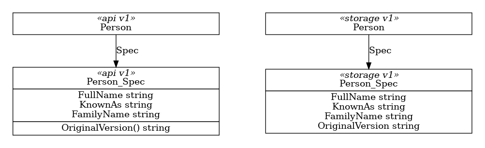

API Versions #
Specification for how we will ensure the ARM API version we use for interaction with ARM matches the version originally requested by a user when they created the resource in their Kubernetes cluster.
Why do we need this? #
Sometimes, in addition to structural changes, there are behaviour changes between ARM API versions. It’s therefore important that we use the requested API version when interacting with ARM to ensure that we get the behaviour requested.
Example #
Revisting the CRM example from the Versioning specification, consider what happens if we have two available versions of the resource Person, lets call them v1 and v2. In v2 the new properties PostalAddress and ResidentialAddress are mandatory, requiring that everyone have a both a mailing address and a home.

If we have a valid v1 Person, trying to submit that through the v2 ARM API will fail because it’s missing these addresses.
Proposed Solution #
We need to preserve the original API Version of each resource, and use that to create an appropriate resource for ARM.
API Preservation #
When generating storage variants, we’ll inject a new OriginalVersion property of type string into the Spec of each resource, providing a place to capture the API version that was originally used to create the resource.
To populate the OriginalVersion property on each storage spec, we’ll inject an OriginalVersion() method (returning string) into the API variant of each spec.

API version shown on the left, corresponding Storage version shown on the right.
For each API spec, generated AssignPropertiesTo*() method will read the value of OriginalVersion() and write it to the OriginalVersion property on the storage variant. The AssignPropertiesFrom*() method will ignore OriginalVersion.
For each Storage spec, the generated AssignPropertiesTo*() and AssignPropertiesFrom*() methods will copy the OriginalVersion property between versions, preserving the original value.
API Recovery #
Into each storage resource variant, we’ll inject a function OriginalGVK(): GroupVersionKind which will use OriginalVersion to create the GVK required.
SequenceDiagram TBC.